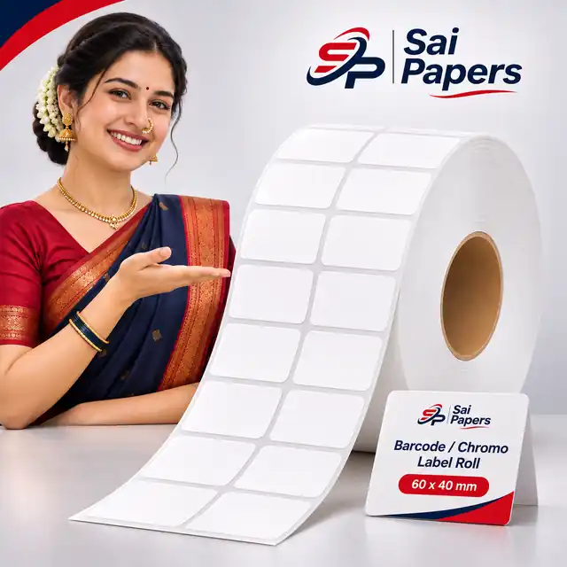

01 / Product overview
An easy-to-recognize label identity
Combine color cues, product names and a readable barcode region to help teams recognize items quickly. Final artwork and label construction are confirmed for each order.
Explore colorful barcode label rolls for retail products, warehouse stock, packaging and custom branding. Browse illustrative applications and discuss the right size, artwork, material and barcode layout with our team in Chhatrapati Sambhajinagar.
Images are illustrative marketing concepts, not verified photos of finished stock. Confirm material, colors, dimensions, print quality and barcode readability before ordering.
Custom color barcode labels help businesses combine visual product identity with machine-readable SKU, pricing or inventory information. Explore color-coded roll labels for retail packaging, warehouse storage and product branding.
Choose distinct colors for product groups, sizes or batches, then reserve a clear barcode area with sufficient contrast and quiet zones. Share your artwork, printer details and intended surface so the team can discuss a suitable label configuration.
Pricing depends on specifications, design and required quantity. Request a personalized quote from our team.
These specifications describe typical product options in the supplied catalogue. Please confirm the final material, roll size and compatibility with our team.
| Design | Custom colors, logo and product information |
|---|---|
| Barcode layout | Prefer dark bars on a white or light panel |
| Variable fields | Price, serial or batch data can be discussed |
| Material | Choose based on surface and operating conditions |
| Size | Custom dimensions on enquiry |
| Recommended checks | Artwork proof, label surface trial and scanner sample test |
| Supply format | Roll format and core size to be confirmed for your workflow |
| Printing method | Preprinted artwork or variable-data process subject to printer and media compatibility |
From branded retail packs to warehouse picking, explore ten visual examples with practical considerations. Illustrations show potential applications; actual supply specifications and artwork are confirmed by quotation.
Combine color cues, product names and a readable barcode region to help teams recognize items quickly. Final artwork and label construction are confirmed for each order.
Different colors can flag sizes, flavors, departments or stock categories. Keep the machine-readable barcode on a high-contrast panel and test the final artwork.
Confirm label width and height, gap, core size and roll direction before production. These practical details matter for dispenser and printer compatibility.
A consistent color system can distinguish retail packages without sacrificing brand identity. Add product information and barcode space appropriate for billing workflows.
Use a visible, flat placement area for product codes, handling references or internal identification. Adhesive selection depends on the packaging surface and storage conditions.
Separate storage zones, product families or picking priorities visually while retaining SKU or location barcodes for scanning. Color should complement, not replace, the code.
Shop owners can use visual groups to spot similar items and variants. Confirm barcode format and print contrast for the specific point-of-sale scanner.
Place logos, color blocks, product titles and machine-readable data in a considered layout. Leave sufficient blank space around each barcode for reliable reading.
A coordinated label palette can help a product family look organized on shelves and displays. Confirm finish, color proof and print result using samples.
For changing SKUs, serial numbers or batches, discuss preprinting versus on-demand printing. Printer model, label coating and thermal transfer ribbon compatibility need testing.
Yes, when the barcode is designed and printed correctly. Keep dark bars on a white or very light background, preserve the required quiet zones, and test a printed sample with your scanner. Avoid red or orange bars for common red-light scanners.
Share your logo, preferred colors, dimensions and artwork. Custom printed layouts can be discussed with the sales team; approve a proof before production.
The right combination depends on the carton, bottle, plastic or other surface, along with handling, moisture and temperature exposure. Tell us where the label will be used so compatible options can be reviewed.
This depends on the design and print workflow. Preprinted color areas may be combined with variable data printed later, provided label material, printer and ribbon or direct thermal method are compatible.
They can help distinguish categories, variants or handling groups visually while the barcode carries identification data for inventory and billing systems. Color should never replace scanner-readable identification.
Share the label width and height, required quantity, artwork, label surface and conditions, preferred roll size or core, printer model if applicable, and any barcode sample or data format.

Chromo barcode label rolls for retail billing, inventory identification and everyday product labeling. Select from glos

Direct thermal label rolls help print shipping, tracking and short-life identification labels without an ink ribbon. A

Shipping label rolls designed for parcel identification, courier handling and e-commerce fulfillment. Explore practical
Tell us your size and quantity for a quotation.